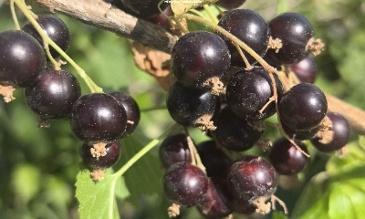
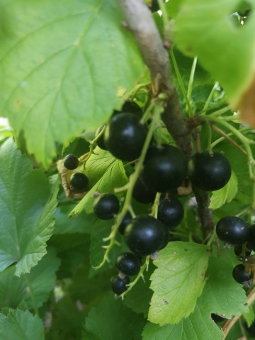

Касис „Богатир“ (Богатырь) е руски сорт черно френско грозде, който се отличава с изключителна студоустойчивост, мощен растеж и висока производителност. Създаден е чрез кръстосване на сортовете „Неосипващ се“ (Неосыпающаяся) и „Голиат“ (Голиаф). Плодовете са едри, кръгли и сочни, със зеленикава месоядна част. Имат много приятен, балансиран сладко-кисел вкус и характерен силен аромат. След пълно узряване се задържат стабилно на гроздовете без да окапват лесно. Сортът е високодобивен – от един развит храст могат да се изберат средно около 4 кг плодове.Зреене: Средно ранен до средно зреещ сорт. Встъпва в активно плододаване на 2-рата до 3-тата година след засаждане Универсална употреба: Плодовете са идеални за консумация в свежо състояние, замразяване, сокове, сиропи и консервиране. Условия за отглежданеПочва: Предпочита богати, влагозадържащи, но добре дренирани почви с леко кисела до неутрална реакция.Светлина: Развива се най-добре на слънчеви места или лека полусянка. Поливане: Изисква редовно поливане, особено по време на цъфтежа и наливането на плодовете през лятото.Подрязване: Извършва се в края на зимата. Касисът плододава най-добре на млади (1-2 годишни) клонки.
📞 Телефон: 0877779963
⬅ Обратно към началната страница